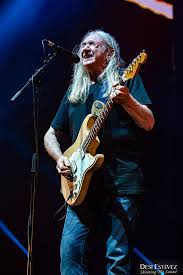
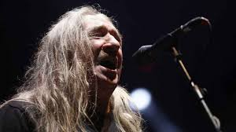
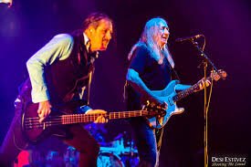

Concierto en Barcelona
22 de diciembre de 2018 — Sant Jordi Club
Detalles del evento
| Concepto | Información |
|---|---|
| Aforo | 5.000 personas (sold out) |
| Precio de las entradas | 40 € |
| Fecha y hora del concierto |

Crónica
En el Sant Jordi Club se selló el capítulo final con elegancia y furia musical. La gira culminó con Barcelona rendida a sus pies, celebrando no una despedida triste, sino un acto de resistencia rockera. Cada tema era un manifiesto, cada acorde una reafirmación de por qué Rosendo es leyenda.
El último concierto de la gira Mi tiempo, señorías…
tuvo lugar el 22 de diciembre de 2018.
Las 5.000 personas que llenaron el Sant Jordi Club fueron testigos del broche final de más de 40 años
sobre los escenarios.
Rosendo salió al escenario acompañado por Rafa J. Vegas al bajo y Mariano Montero a la batería. La noche contó con la presencia de Rodrigo Mercado como telonero, añadiendo un toque familiar al evento.

La noche fue un repaso exhaustivo por toda su carrera: desde los tiempos de Leño
con temas como Maneras de vivir
y El porqué de tus silencios
, hasta sus grandes clásicos
en solitario como Flojos de pantalón
, Loco por incordiar
y Agradecido
.
El público barcelonés despidió a Rosendo con una ovación que duró varios minutos. Fue una noche de emoción, celebración y reconocimiento a una carrera impecable. El rock urbano español decía adiós a uno de sus máximos exponentes.
Barcelona fue el escenario perfecto para cerrar este capítulo. No fue un final triste, sino una celebración de todo lo conseguido, de la coherencia artística y de la honestidad que siempre caracterizó a Rosendo.
Ubicación
Galería del concierto



"Flojos de pantalón, pero nunca flojos de corazón." — Rosendo Mercado